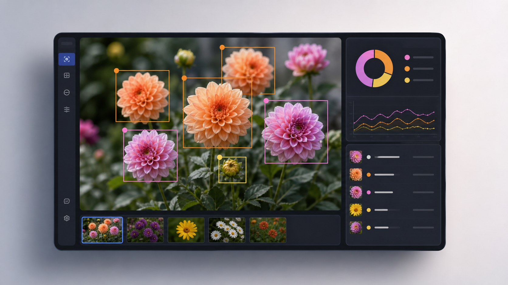
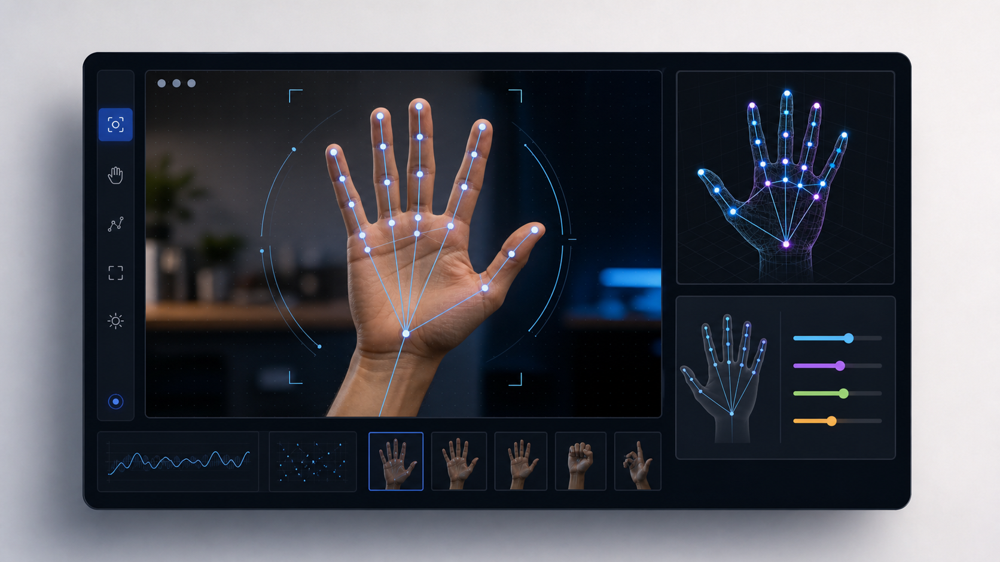
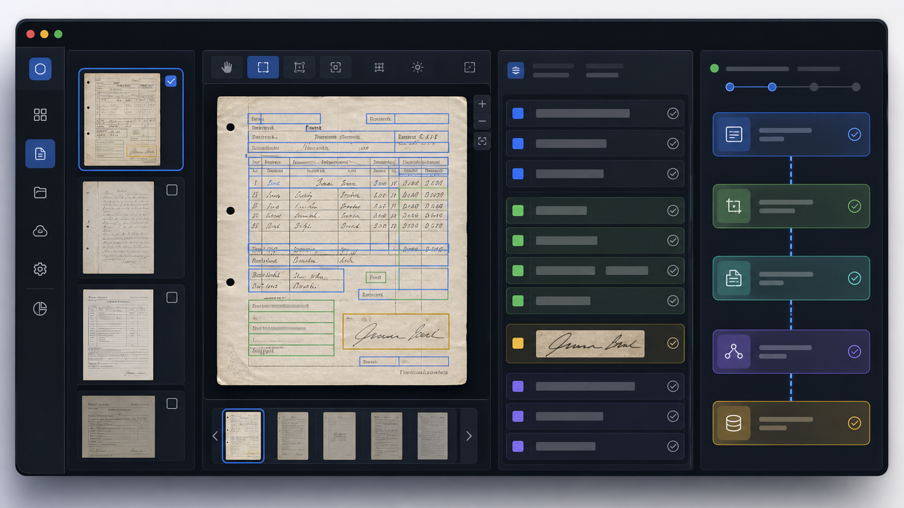
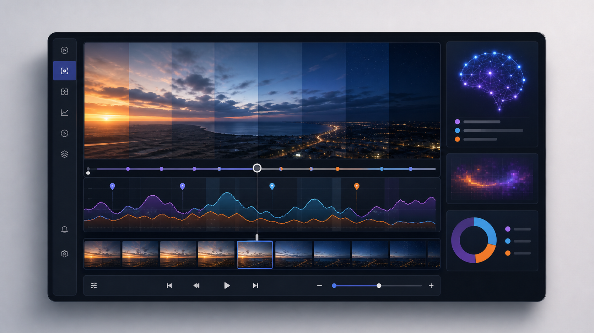
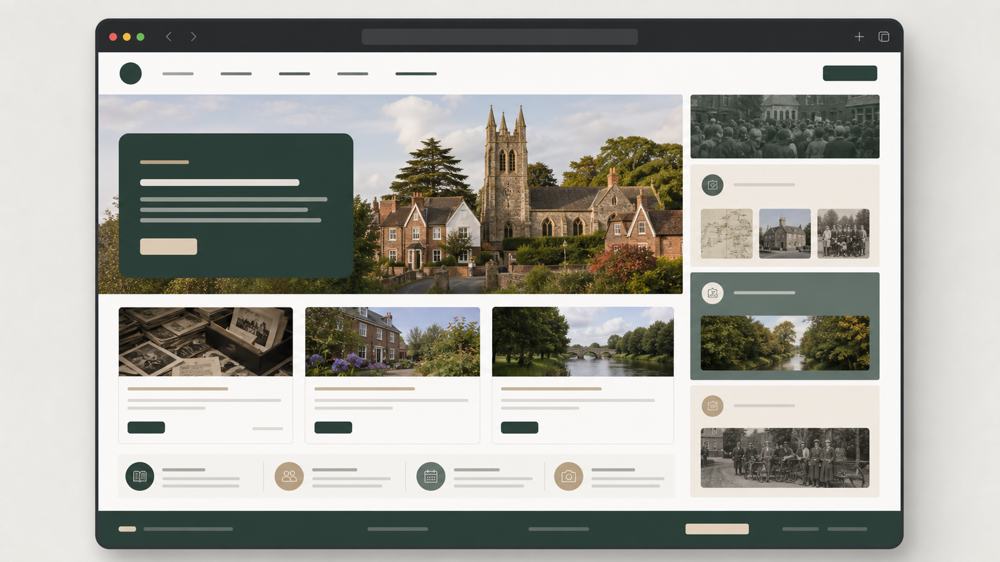
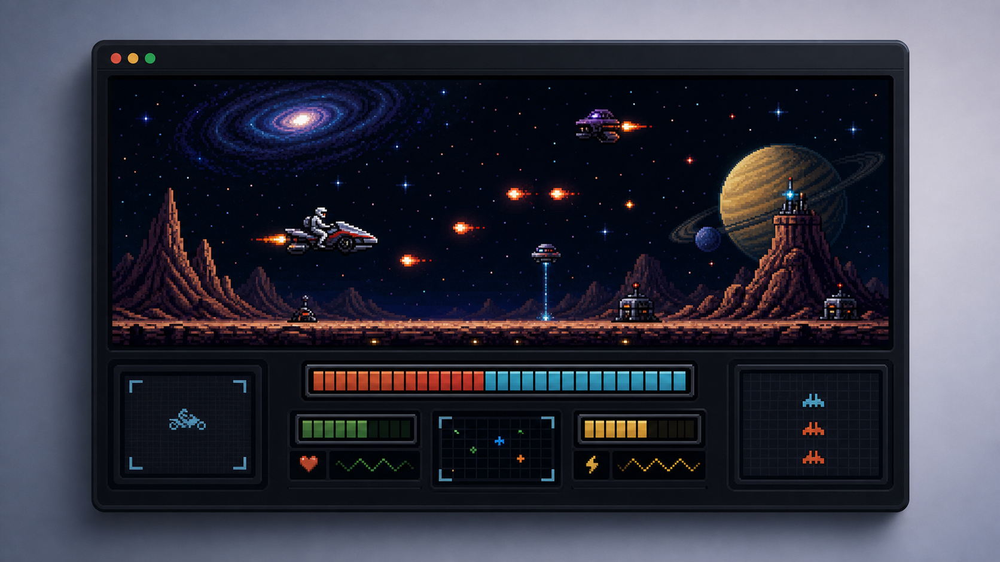

Product judgement
Shaping product direction around commercial reality, customer outcomes, and the practical needs of HR and payroll teams.
Shaping product direction around commercial reality, customer outcomes, and the practical needs of HR and payroll teams.
Reviewing current-state gaps, guiding selection choices, and helping teams reduce risk during complex software implementations.
Translating technical and delivery detail into language that helps executives make faster, better decisions.
Senior leadership across software, payroll, and SaaS businesses, including product direction, customer strategy, and market-facing growth.
Advisory work on HR and payroll implementations, system selection, and process improvement, including audit-style review of live environments.
Public-facing digital work including Collingham.org, local history digitisation, and other practical projects that make information easier to find and use.
Supporting delivery confidence through structured review, risk reduction, and better decision making.
Helping teams connect product direction, adoption, and practical delivery outcomes.
Translating complexity into decisions that customers, sponsors, and teams can act on.
Bringing long-term sector knowledge to strategy, implementation, and assurance conversations.
Selected work
Scroll sideways to browse the cards. The carousel is intentionally tactile, not auto-playing.

A visual demo that uses computer vision to identify flowers and present the result clearly.

An AI vision experiment focused on hand mapping and interactive visual feedback.

A workflow demo showing how OCR can speed up archive handling and reduce manual effort.

A dashboard-led project that turns time-based activity into something easier to read at a glance.

Community-focused digital work with an emphasis on organisation, clarity, and public usefulness.

A retro-inspired game project that shows programming range as well as playful problem solving.
If you are hiring for HR software product, implementation assurance, or related leadership work, the quickest route is LinkedIn or email.